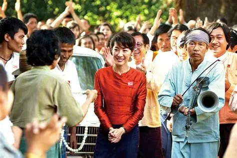

STORY
あらすじ

自由と信念を貫いた女性の物語
『The Lady』は、ミャンマーの民主化運動の象徴として知られる アウンサンスーチー氏の人生を描いた伝記映画です。
1988年、母親の看病のために帰国した彼女は、 民主化を求める市民たちの声に応え、 国の未来のために活動を始めます。
しかし、その活動は軍事政権との対立を招き、 長期間にわたる自宅軟禁生活を余儀なくされました。
映画では、祖国への責任と家族への愛情の間で揺れ動きながらも、 自由と民主主義のために信念を貫く姿が感動的に描かれています。
また、夫であるマイケル・アリス博士との深い愛情や、 家族と離れて暮らさなければならなかった苦しみも丁寧に描かれており、 多くの観客の心を打ちました。
歴史的背景
ミャンマーでは1988年に大規模な民主化運動が起こりました。 多くの市民が自由と民主主義を求めて立ち上がりましたが、 軍事政権によって厳しく弾圧されました。
アウンサンスーチー氏はその中心人物となり、 非暴力による民主化運動を続けました。 その結果、長年にわたり自宅軟禁下に置かれることになりました。
本作品は、そのような歴史的出来事を背景にしながら、 一人の女性の勇気と信念を描いています。
Timeline
1988年 ― 民主化運動に参加
1989年 ― 自宅軟禁生活が始まる
1991年 ― ノーベル平和賞を受賞
2010年 ― 自宅軟禁が解除される
2011年 ― 映画『The Lady』公開
Main Themes
本作品では、「自由（Freedom）」「平和（Peace）」 「希望（Hope）」「家族愛（Family Love）」 「信念（Belief）」という重要なテーマが描かれています。
これらのテーマは、国や文化を超えて、 私たちが大切にすべき価値について考えさせてくれます。